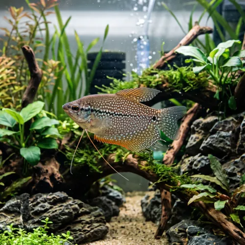

Nome popular principal
Tricogaster Pérola
Tricogaster Pérola, Tricogaster Leeri, Gourami Pérola, Trichogaster Leeri
Ficha de peixe
Anabantídeos e Labirintídeos
Um dos gouramis mais elegantes do aquarismo, famoso por suas pintas peroladas e temperamento pacífico.

Nome popular principal
Tricogaster Pérola, Tricogaster Leeri, Gourami Pérola, Trichogaster Leeri
Nome científico
Nome técnico essencial para taxonomia, cruzamento de manejo e referência editorial consistente.
Dificuldade de manejo
Use este nível como referência inicial, sempre considerando volume, estabilidade e compatibilidade do aquário.
Seção 1
Seção 2
Seções 4 a 6
Tricogaster Pérola tem hábito alimentar onívoro. Excelente. 1 a 2 vezes ao dia. Aceita prontamente rações secas em flocos e grânulos, beneficiando-se da oferta regular de artêmias e dáfnias.
Machos têm a nadadeira dorsal mais longa e pontiaguda, além da garganta e peito com coloração alaranjada viva. Tipo de reprodução: Ovíparo. Dificuldade de reprodução: Intermediário. O macho constrói um ninho de bolhas na superfície entre as plantas e cuida dos ovos até que alevinos comecem a nadar.
Alta. Substrato recomendado: Areia fina de rio ou cascalho escuro de granulometria fina a média. Necessidade de esconderijos: Média. Aprecia aquários com plantas flutuantes para ancoragem do ninho de bolhas e vegetação densa nas laterais para refúgio.
Seção 7
Atinge até 12 cm de comprimento e necessita de acesso fácil à superfície para realizar a respiração aérea suplementar.
Seção 8
Sim, ele possui um órgão respiratório chamado labirinto que permite captar oxigênio diretamente da superfície da água.
Não é recomendado, pois o Barbo-Sumatra costuma beliscar as nadadeiras pélvicas finas e filamentosas do Tricogaster.
O ideal é um aquário de pelo menos 100 litros para abrigar um casal ou um pequeno grupo com bastante espaço.